Segnalazioni Navi
Il portale delle Smart Guide è uno spazio digitale che raccoglie risorse pratiche e aggiornate in un unico ambiente intuitivo. Strumenti chiari e organizzati per organizzarti e trovare subito ciò che ti serve.
01.
Inserimento Configurazioni segnalazioni
Una panoramica sull'inserimento delle Configurazioni segnalazioni.
Punto di accesso
La voce di menù
Dalla dashboard, è possibile accedere alle principali sezioni tramite le voci di menu.
Menu a tendina
Cliccando sulla voce "Gestione e Consultazione" viene visualizzato un menu a tendina; nella sezione "Navi", è possibile accedere alla voce "Gestione Navi Segnalate".

Inserimento delle Configurazioni segnalazioni
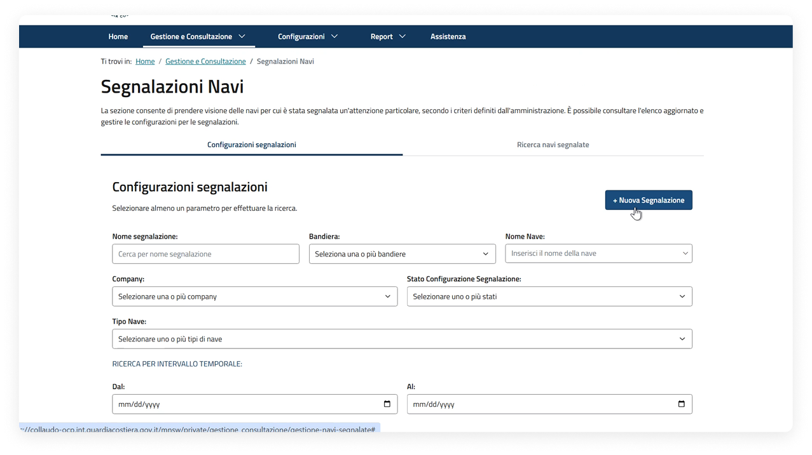
Dopo aver effettuato l'accesso alla pagina "Segnalazioni Navi", cliccare sul pulsante "Nuova Segnalazione" per avviare il flusso di inserimento.
Tipologia nuova segnalazione: "Per criteri" o "Per navi"
In questa pagina l'utente può decidere se inserire una nuova segnalazione per criteri o per navi.
Inserimento segnalazione "Per criteri"
Consente di configurare le segnalazioni per le navi da attenzionare all'interno del sistema, indicando i criteri comuni per individuare le navi da segnalare.
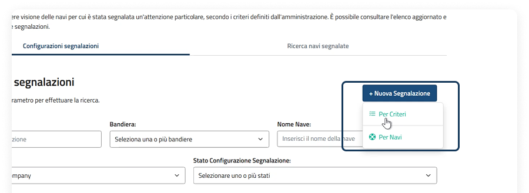
Inserimento segnalazione "Per navi"
Consente di configurare le segnalazioni per le navi da attenzionare all'interno del sistema, indicando la singola nave da segnalare.
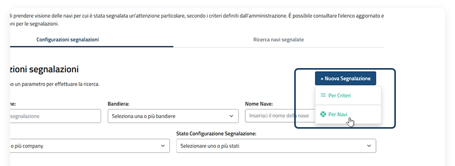
Inserimento "Per Criteri"
Step di inserimento delle configurazioni segnalazioni
Dopo aver selezionato inserimento "Per criteri", l'utente dovrà procedere seguendo i passaggi sottostanti.
Selezione criteri comuni
Consente di indicare quale tipo di criteri saranno relativi alla configurazione per la segnalazione delle navi.
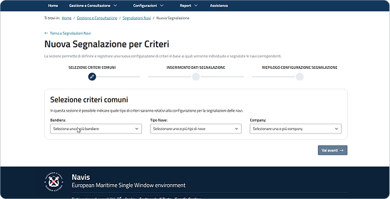
Inserimento dati segnalazione
Consente di inserire i dati della segnalazione, aggiungere i destinatari ai quali far pervenire la comunicazione, indicare l'evento che scatena l'effetto dell'invio email e allegare eventuali documenti.
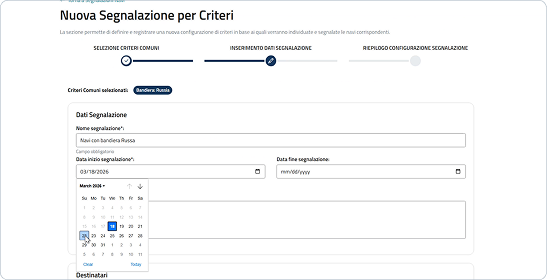
Riepilogo configurazione segnalazione
Consente di visualizzare il riepilogo delle informazioni inserite negli step precedenti e procedere con il Salvataggio.
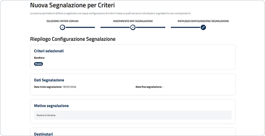
Inserimento configurazione segnalazione "Per Criteri"
Selezione criteri comuni
SELEZIONE CRITERI COMUNI
INSERIMENTO DATI SEGNALAZIONE
RIEPILOGO CONFIGURAZIONE SEGNALAZIONE
Selezione criteri comuni
Selezionare tramite i rispettivi menu a tendina uno o più criteri come: Bandiera, Tipo Nave e Company.
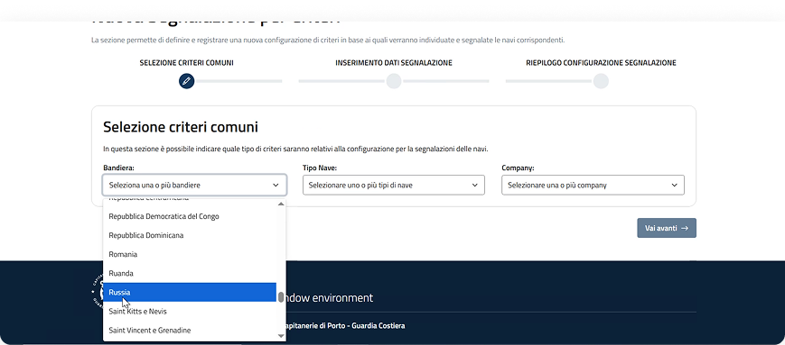
Conferma e step successivo
Una volta selezionati uno o più criteri, cliccare il pulsante "Vai avanti" per andare allo step successivo.
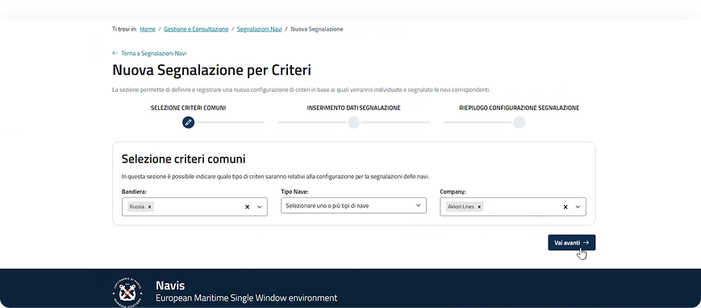
Inserimento configurazione segnalazione "Per Criteri"
Inserimento dati segnalazione
SELEZIONE CRITERI COMUNI
INSERIMENTO DATI SEGNALAZIONE
RIEPILOGO CONFIGURAZIONE SEGNALAZIONE
Inserimento dati segnalazione
Aggiungere i dati della segnalazione come: Nome segnalazione, Data di inizio, eventualmente data di fine e il motivo della segnalazione.
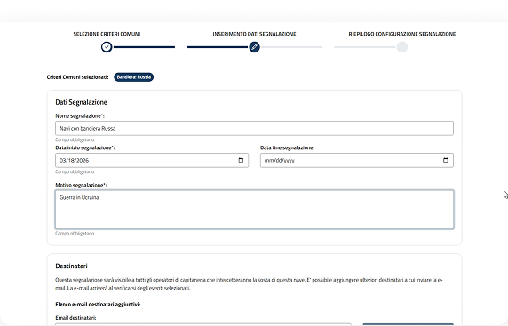
Inserimento destinatari
Aggiungere uno o più destinatari a cui inviare l'email: inserire l'indirizzo email e cliccare il tasto "Aggiungi". Sarà possibile eliminare il destinatario aggiunto cliccando l'icona della "x".

Documento e step successivo
È possibile allegare un documento. Per proseguire allo step finale, cliccare il tasto "Vai avanti".
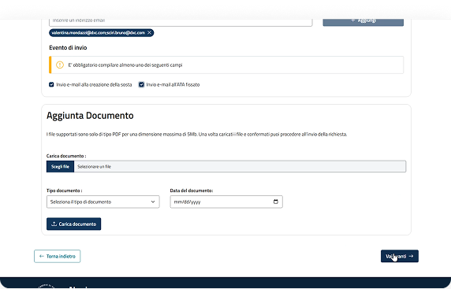
Inserimento configurazione segnalazione "Per Criteri"
Riepilogo configurazione segnalazione
SELEZIONE CRITERI COMUNI
INSERIMENTO DATI SEGNALAZIONE
RIEPILOGO CONFIGURAZIONE SEGNALAZIONE
Dettaglio riepilogo
Nell'ultimo passaggio di riepilogo è possibile consultare tutte le informazioni inserite negli step precedenti.
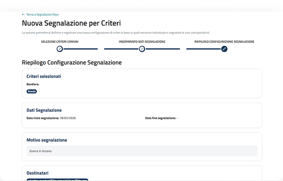
Verifica e salvataggio
Dopo avere verificato il corretto inserimento dei dati negli step precedenti, cliccare il pulsante "Salva configurazione" per procedere.
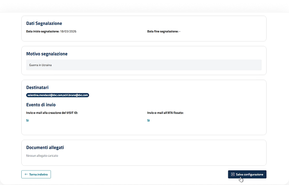
Finestra di conferma
Il sistema mostra una finestra di conferma del salvataggio, cliccare "Salva configurazione" per salvare la configurazione con i nuovi dati. Il sistema mostra una finestra che comunica che la creazione della configurazione segnalazione è avvenuta con successo.
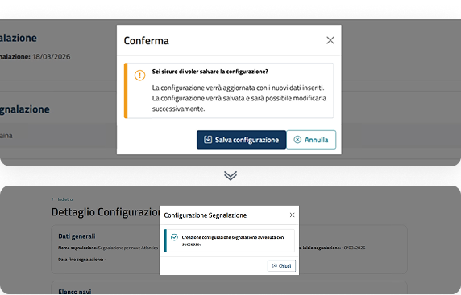
Inserimento "Per Navi"
Tipologia di inserimento: "Manuale" o "Da File"
Dopo aver selezionato inserimento "Per navi", l'utente dovrà selezionare la tipologia di inserimento tramite selezione nel menu a tendina.
In questa sezione è possibile indicare quale tipo di inserimento si vuole effettuare, se manuale o caricando un file di tracciato già compilato. Inoltre, se si seleziona la modalità "Da File" sarà possibile scaricare un template del tracciato da poter compilare e successivamente caricare.
Inserimento "Per Navi" — Manuale
Step di inserimento delle configurazioni segnalazioni
Dopo aver selezionato il tipo inserimento "Manuale", l'utente dovrà procedere seguendo i passaggi sottostanti:
Tipo di inserimento (manuale)
Consente di indicare il tipo di inserimento si vuole effettuare, in questo caso "Manuale".
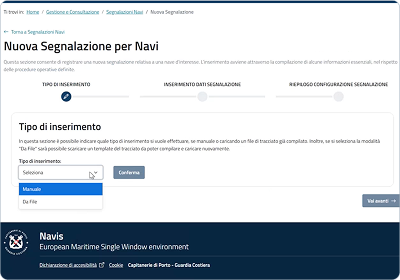
Seleziona navi
Consente di selezionare una o più navi per la quale si vuole creare la segnalazione.
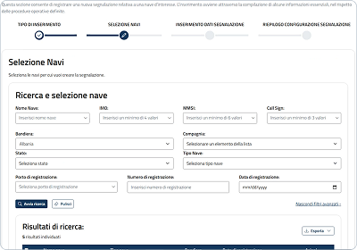
Inserimento dati segnalazione
Consente di inserire i dati della segnalazione, aggiungere i destinatari ai quali far pervenire la comunicazione, indicare l'evento che scatena l'effetto dell'invio email e allegare eventuali documenti.
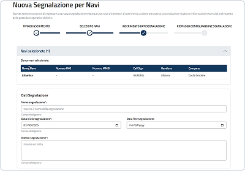
Riepilogo configurazione segnalazione
Consente di visualizzare il riepilogo delle informazioni inserite negli step precedenti e procedere con il Salvataggio.
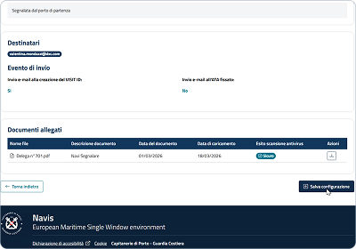
Inserimento configurazione segnalazione "Per Navi" - Manuale
Tipo di inserimento
TIPO DI INSERIMENTO
SELEZIONA NAVI
INSERIMENTO DATI SEGNALAZIONE
RIEPILOGO CONFIGURAZIONE SEGNALAZIONE
Selezione tipologia inserimento
Indicare, tramite selezione da un menu a tendina, la tipologia di inserimento "Manuale".
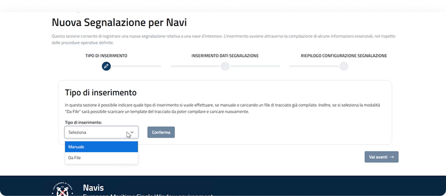
Conferma e step successivo
Dopo aver selezionato la voce "Manuale" dal menu a tendina, cliccare "Conferma" per avanzare allo step successivo.
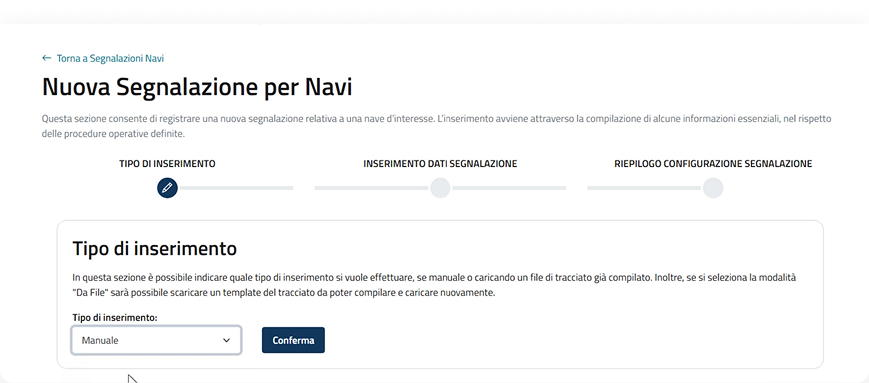
Inserimento configurazione segnalazione "Per Navi" - Manuale
Seleziona navi
TIPO DI INSERIMENTO
SELEZIONA NAVI
INSERIMENTO DATI SEGNALAZIONE
RIEPILOGO CONFIGURAZIONE SEGNALAZIONE
Ricerca nave
Ricercare la nave tramite uno o più criteri disponibili. Una volta selezionato un criterio cliccare su "Avvia ricerca".
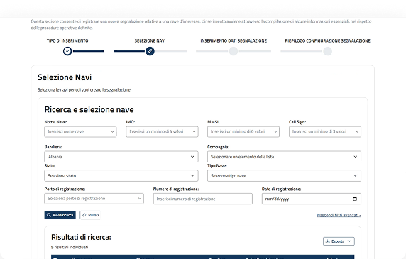
Azioni disponibili
Accedere al dettaglio dell'anagrafica nave tramite l'icona dell'occhio, selezionare una o più navi tramite checkbox. Per eliminare le navi selezionate, cliccare l' icona del cestino.
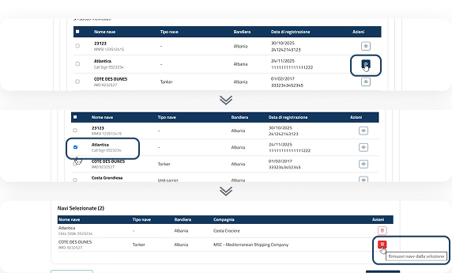
Verifica e step successivo
Dopo aver selezionato una o più navi, cliccare il tasto "Vai avanti" per proseguire allo step successivo.
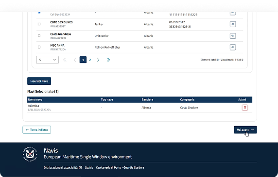
Inserimento configurazione segnalazione "Per Navi" - Manuale
Inserimento dati segnalazione
TIPO DI INSERIMENTO
SELEZIONA NAVI
INSERIMENTO DATI SEGNALAZIONE
RIEPILOGO CONFIGURAZIONE SEGNALAZIONE
Inserimento dati segnalazione
Aggiungere i dati della segnalazione come: Nome segnalazione, Data di inizio, eventualmente data di fine e il motivo della segnalazione.
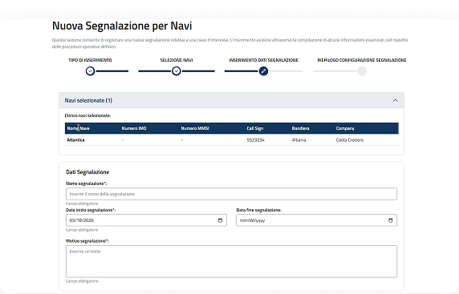
Inserimento destinatari
Aggiungere uno o più destinatari a cui inviare l'email: inserire l'indirizzo email e cliccare il tasto "Aggiungi". Sarà possibile eliminare il destinatario aggiunto cliccando l'icona della "x".
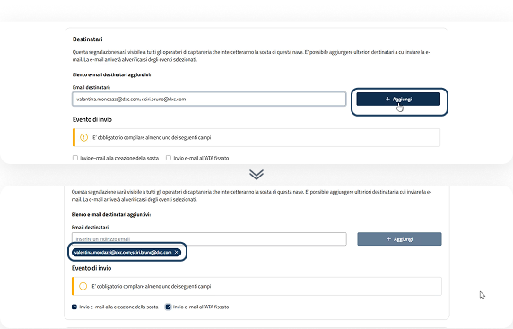
Documento e step successivo
È possibile allegare un documento. Per proseguire allo step finale, cliccare il tasto "Vai avanti".
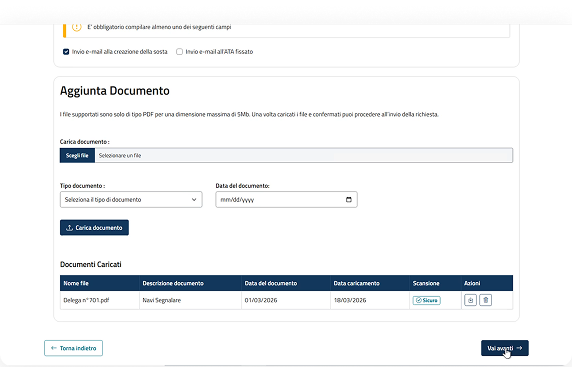
Inserimento configurazione segnalazione "Per Navi" - Manuale
Riepilogo configurazione segnalazione
TIPO DI INSERIMENTO
SELEZIONA NAVI
INSERIMENTO DATI SEGNALAZIONE
RIEPILOGO CONFIGURAZIONE SEGNALAZIONE
Verifica e salvataggio
Dopo avere verificato il corretto inserimento dei dati negli step precedenti, cliccare il pulsante "Salva configurazione" per procedere.

Finestra di conferma
Il sistema mostra una finestra di conferma del salvataggio. Cliccare "Salva configurazione" per salvare la configurazione con i nuovi dati.
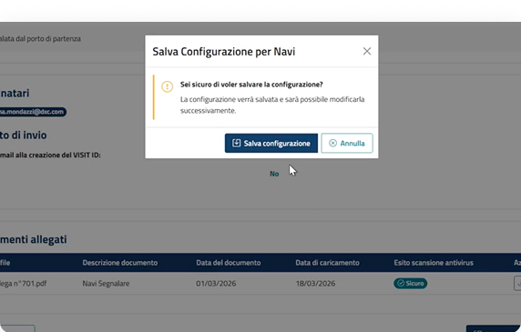
Finestra di successo
Il sistema mostra una finestra che comunica che la creazione della configurazione segnalazione è avvenuta con successo.
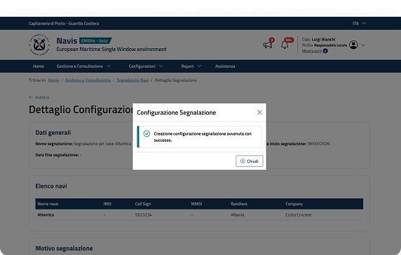
Inserimento "Per Navi" — Da File
Step di inserimento delle configurazioni segnalazioni
Dopo aver selezionato il tipo inserimento "Da File", l'utente dovrà procedere seguendo i passaggi sottostanti:
Tipo di inserimento (da file)
Consente di indicare il tipo di inserimento si vuole effettuare, in questo caso "Da File".
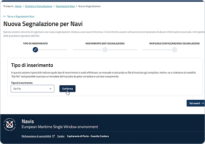
Upload file e estrazione dati
Consente di caricare un file Excel o CSV contenente i dati delle navi da segnalare.
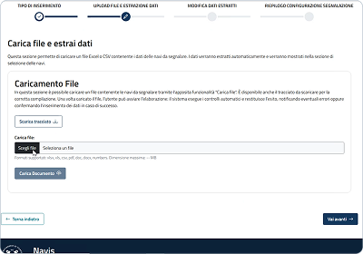
Modifica dati estratti
Consente di modificare i dati elaborati dal file caricato.
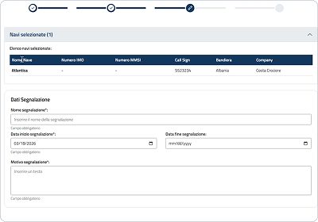
Riepilogo configurazione segnalazione
Consente di visualizzare il riepilogo delle informazioni inserite negli step precedenti e procedere con il Salvataggio.

Inserimento configurazione segnalazione "Per Navi" - Da File
Tipo di inserimento
TIPO DI INSERIMENTO
UPLOAD FILE E ESTRAZIONE DATI
MODIFICA DATI ESTRATTI
RIEPILOGO CONFIGURAZIONE SEGNALAZIONE
Selezione tipologia inserimento
Indicare, tramite selezione da un menu a tendina, la tipologia di inserimento "Da File".

Conferma e step successivo
Dopo aver selezionato la voce "Da File" dal menu a tendina, cliccare "Conferma" per avanzare allo step successivo.
Inserimento configurazione segnalazione "Per Navi" - Da File
Upload file e estrazione dati
TIPO DI INSERIMENTO
UPLOAD FILE E ESTRAZIONE DATI
MODIFICA DATI ESTRATTI
RIEPILOGO CONFIGURAZIONE SEGNALAZIONE
Selezione del file
Scegliere il file cliccando su "Scegli File" e procedere con il caricamento secondo le modalità previste dal browser.
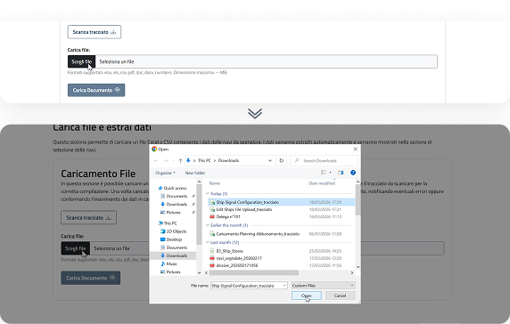
Estrazione delle navi dal file caricato
Per caricare il documento cliccare "Carica documento". Il sistema mostra un'informativa di successo e l'elenco delle navi estratte dal file. Sarà comunque possibile aggiungere ulteriori navi cliccando il pulsante "Aggiungi Navi".
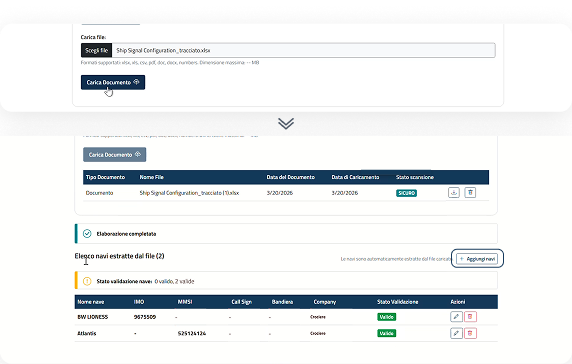
Possibile modifica e eliminazione e step successivo
Dopo aver caricato il documento è possibile eliminare le navi attraverso l' icona del cestino e modificare le navi caricate attraverso l' icona della matita. Successivamente cliccare "Vai avanti" per proseguire.
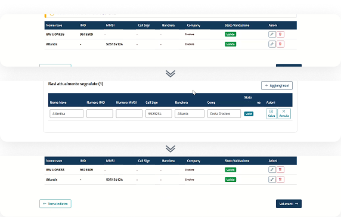
Inserimento configurazione segnalazione "Per Navi" - Da File
Modifica dati estratti
TIPO DI INSERIMENTO
UPLOAD FILE E ESTRAZIONE DATI
MODIFICA DATI ESTRATTI
RIEPILOGO CONFIGURAZIONE SEGNALAZIONE
Verifica e modifica dati segnalazione
Modificare i dati della segnalazione come: Nome segnalazione, Data di inizio, eventualmente data di fine e il motivo della segnalazione.
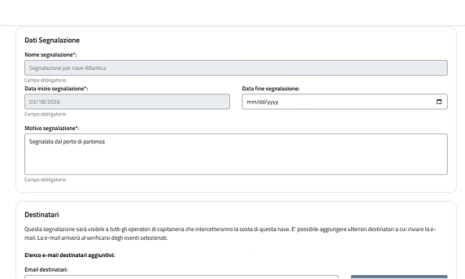
Verifica e modifica destinatari
Modificare uno o più destinatari a cui inviare l'email: inserire l'indirizzo email e cliccare il tasto "Aggiungi". Sarà possibile eliminare il destinatario aggiunto cliccando l'icona della "x".

Documento e step successivo
Se necessario, scegliere e caricare un documento. Per proseguire allo step finale, cliccare il tasto "Vai avanti".

Inserimento configurazione segnalazione "Per Navi" - Da File
Riepilogo configurazione segnalazione
TIPO DI INSERIMENTO
UPLOAD FILE E ESTRAZIONE DATI
MODIFICA DATI ESTRATTI
RIEPILOGO CONFIGURAZIONE SEGNALAZIONE
Verifica e salvataggio
Dopo avere verificato il corretto inserimento dei dati negli step precedenti, cliccare il pulsante "Salva configurazione" per procedere.
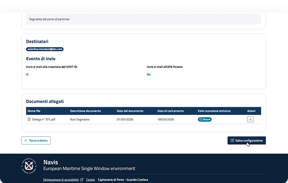
Finestra di conferma
Il sistema mostra una finestra di conferma del salvataggio, cliccare "Salva configurazione" per salvare la configurazione con i nuovi dati.

Finestra di successo
Il sistema mostra una finestra che comunica che la creazione della configurazione segnalazione è avvenuta con successo.
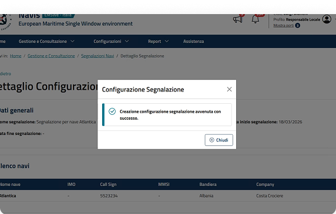
Ulteriori modalità di ricerca
Inserimento di una nave non presente a sistema
Nessun risultato trovato e inserimento nave
Una volta cercata la nave tramite i criteri disponibili, se il sistema non restituisce risultati, cliccare su "Inserisci nave" per aggiungerla alla segnalazione.
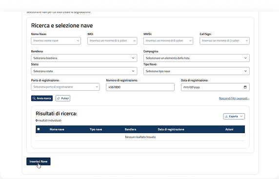
Inserimento dati nuova nave
Verrà mostrata una finestra in cui inserire almeno uno dei criteri visualizzati, come: Nome Nave, IMO, Call Sign, MMSI, Bandiera, Porto di registrazione, Numero di Registrazione e Data di registrazione. Dopo aver inserito uno o più criteri, cliccare "Salva e associa alla segnalazione".
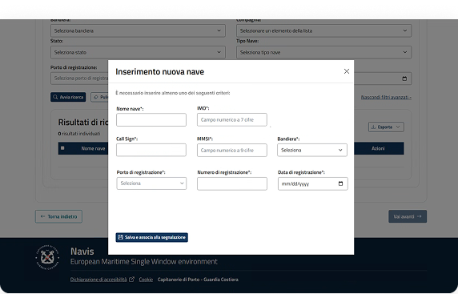
Possibili modifiche sulla nave aggiunta
Dopo aver aggiunto la nave, è possibile modificarne i dati tramite l' icona della matita e successivamente salvare o annullare le modifiche tramite gli appositi pulsanti.

02.
Ricerca e consultazione Configurazioni segnalazioni
Una panoramica sulla ricerca e consultazione delle Configurazioni segnalazioni.
Punto di accesso
La voce di menù
Dalla dashboard, è possibile accedere alle principali sezioni tramite le voci di menu.
Menu a tendina
Cliccando sulla voce "Gestione e Consultazione" viene visualizzato un menu a tendina; nella sezione "Navi", è possibile accedere alla voce "Gestione Navi Segnalate".
Ricerca tra Configurazioni segnalazioni e Ricerca navi segnalate
In questa pagina l'utente può decidere se ricercare per configurazioni segnalazioni e navi segnalate attraverso la selezione di una delle voci.
Configurazione segnalazioni
Consente di ricercare e consultare l'elenco delle segnalazioni presenti a sistema.
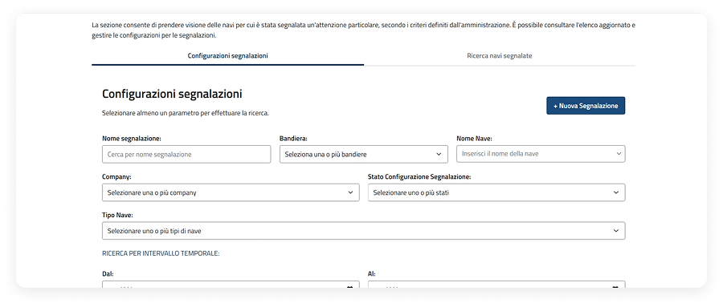
Ricerca navi segnalate
Consente di ricercare e consultare le navi segnalate.
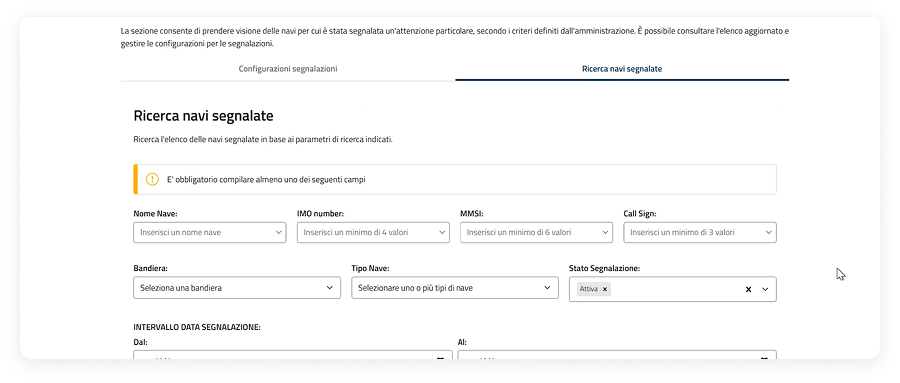
Configurazione segnalazioni
Funzionalità in pagina
È possibile avviare subito la ricerca oppure aggiungere ulteriori filtri per rendere i risultati più precisi. La schermata è suddivisa nelle seguenti tre sezioni:
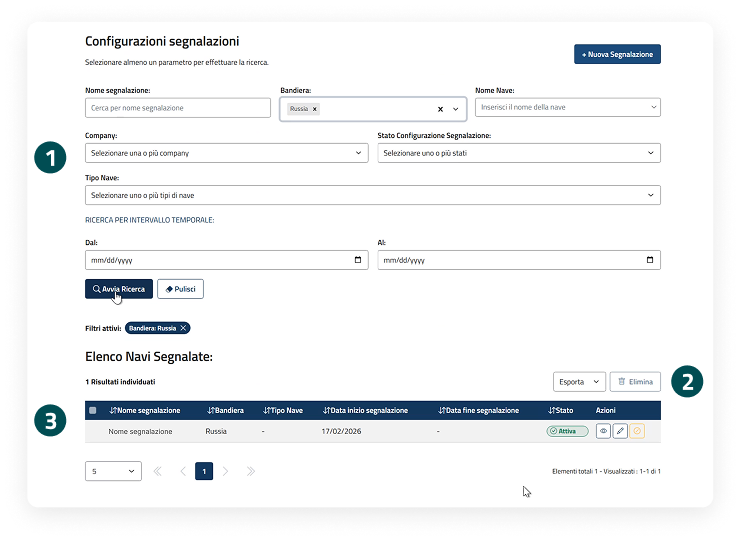
Sezione filtri
La sezione Filtri consente di ricercare le segnalazioni secondo diversi criteri. La ricerca può avvenire per: Nome Segnalazione, Bandiera, Nome Nave, Company, Stato Configurazione Segnalazione, Tipo Nave e Intervallo temporale. I filtri applicati sono visualizzati e cancellabili.
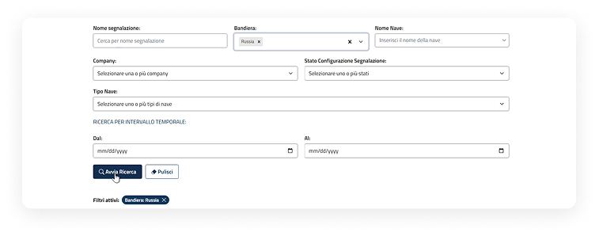
Azioni sulla tabella dei risultati
È possibile esportare i risultati di ricerca attraverso il pulsante "Esporta" e dopo aver selezionato una o più segnalazioni è possibile eliminarle tramite il pulsante "Elimina".
Visualizzazione segnalazioni tramite tabella
I risultati della ricerca vengono presentati in una tabella, mostrando le informazioni principali e le azioni disponibili.
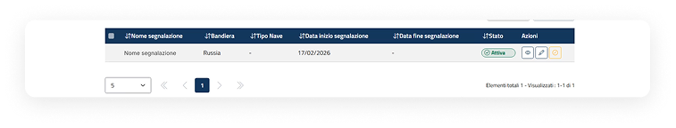
Ricerca e consultazione Configurazioni segnalazioni (Per Criteri)
Visualizzazione dettaglio
All'interno della pagina sono consultabili le seguenti informazioni:
- Dati Generali
- Criteri Selezionati
- Motivo Segnalazione
- Destinatari
- Documenti Allegati
Possibili azioni sulla Configurazione per criteri:
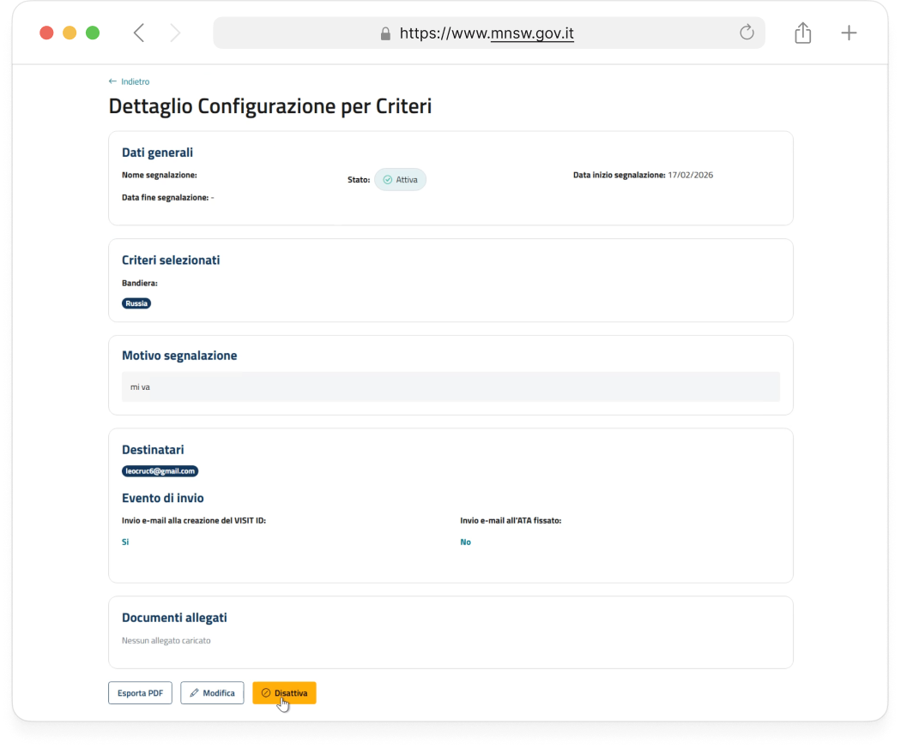
Ricerca navi segnalate
Funzionalità in pagina
È possibile avviare subito la ricerca oppure aggiungere ulteriori filtri per rendere i risultati più precisi. La schermata è suddivisa nelle seguenti tre sezioni:
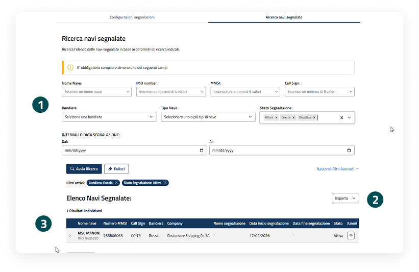
Sezione filtri
La sezione Filtri consente di ricercare le navi segnalate secondo diversi criteri. La ricerca può avvenire per filtri base, come Nome Nave, IMO number, MMSI, Call Sign, Bandiera, Tipo Nave e Stato Segnalazione, e filtri avanzati come l'intervallo data segnalazione. I filtri applicati sono visualizzati e cancellabili.
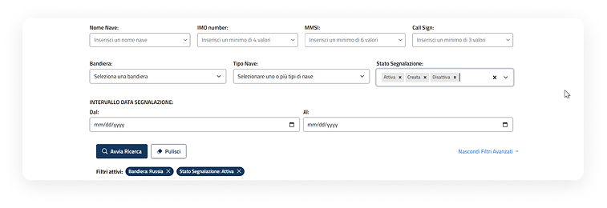
Azioni sulla tabella dei risultati
È possibile esportare i risultati di ricerca attraverso il pulsante "Esporta".
Visualizzazione della navi segnalate tramite tabella
I risultati della ricerca vengono presentati in una tabella, mostrando le informazioni principali e le azioni disponibili.
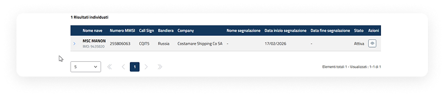
Ricerca e consultazione Configurazioni segnalazioni (Per Navi)
Visualizzazione dettaglio
All'interno della pagina sono consultabili le seguenti informazioni:
- Dati Generali
- Elenco Navi
- Motivo Segnalazione
- Destinatari
- Documenti Allegati
Possibili azioni sulla Configurazione per criteri:
03.
Modifica Configurazioni segnalazioni (Per criteri)
Una panoramica sulla modifica delle Configurazioni segnalazioni inserite per criteri.
Punto di Accesso alla modifica Configurazione segnalazioni
Attivazione della "Modifica" dall'elenco risultati
Nell'elenco risultati delle navi segnalate è possibile accedere al dettaglio in modalità modifica cliccando sull' "icona della matita".
Attivazione della "modifica" da pagina di dettaglio
Nell'elenco risultati delle navi segnalate, è possibile accedere al dettaglio in modalità visualizzazione cliccando sull' "icona dell'occhio". All'interno del dettaglio, per procedere con la modifica è necessario cliccare sul pulsante "Modifica".
Passaggi modifica configurazioni segnalazioni
SELEZIONE CRITERI COMUNI
INSERIMENTO DATI SEGNALAZIONE
RIEPILOGO CONFIGURAZIONE SEGNALAZIONE
All'interno della pagina di dettaglio in modalità Modifica, il processo di aggiornamento delle informazioni seguirà lo stesso flusso guidato a step, descritto nel flusso di "Inserimento Configurazioni segnalazioni (Per Criteri)".
L'unica informazione che non sarà possibile modificare è la data inizio segnalazione.
Modifica Configurazioni segnalazioni (Per Criteri)
Riepilogo configurazione segnalazione
SELEZIONE CRITERI COMUNI
INSERIMENTO DATI SEGNALAZIONE
RIEPILOGO CONFIGURAZIONE SEGNALAZIONE
Dettaglio riepilogo
Nell'ultimo passaggio di riepilogo è possibile consultare tutte le informazioni inserite negli step precedenti.

Finestra di conferma
Il sistema mostra una finestra di conferma del salvataggio, cliccare "Aggiorna configurazione" per salvare la configurazione con i nuovi dati.
Finestra di successo
Il sistema mostra una finestra che comunica che la modifica della segnalazione è avvenuta con successo.

04.
Modifica Configurazioni segnalazioni (Per Navi)
Una panoramica sulla modifica delle Configurazioni segnalazioni inserite per navi.
Punto di Accesso alla modifica Configurazione segnalazioni
Attivazione della "Modifica" dall'elenco risultati
Nell'elenco risultati delle navi segnalate è possibile accedere al dettaglio in modalità modifica cliccando sull' "icona della matita".
Attivazione della "modifica" da pagina di dettaglio
Nell'elenco risultati delle navi segnalate è possibile accedere al dettaglio in modalità visualizzazione cliccando sull' "icona dell'occhio". All'interno del dettaglio, per procedere con la modifica è necessario cliccare sul pulsante "Modifica delega".
Passaggi modifica configurazioni segnalazioni
MODIFICA NAVI
INSERIMENTO DATI SEGNALAZIONE
RIEPILOGO CONFIGURAZIONE SEGNALAZIONE
All'interno della pagina di dettaglio in modalità Modifica, il processo di aggiornamento delle informazioni seguirà lo stesso flusso guidato a step, descritto nel flusso di "Inserimento Configurazioni segnalazioni (Per Navi)".
Nel primo step "Modifica Navi" si potrà procedere aggiungendo manualmente ulteriori navi o tramite caricamento da file; inoltre si potranno modificare i dati e cancellare le navi presenti in elenco.
Modifica Configurazioni segnalazioni (Per Navi)
Riepilogo configurazione segnalazione
MODIFICA NAVI
INSERIMENTO DATI SEGNALAZIONE
RIEPILOGO CONFIGURAZIONE SEGNALAZIONE
Dettaglio riepilogo
Nell'ultimo passaggio di riepilogo è possibile consultare tutte le informazioni inserite negli step precedenti.
Finestra di conferma
Il sistema mostra una finestra di conferma del salvataggio, cliccare "Aggiorna configurazione" per salvare la configurazione con i nuovi dati.

Finestra di successo
Il sistema mostra una finestra che comunica che la modifica della segnalazione è avvenuta con successo.
05.
Cancellazione Configurazioni segnalazioni
Una panoramica sulla cancellazione delle Configurazioni segnalazioni.
Passaggi cancellazione da elenco risultati
Dopo aver creato una configurazione segnalazione, l'utente può eliminarla dall'elenco dei risultati in tabella seguendo i passaggi indicati:
Eliminazione tramite selezione massiva
Selezionando una o più segnalazioni, sarà possibile eliminarle cliccando il tasto "Elimina".
Eliminazione singola
È possibile eliminare una singola segnalazione cliccando sull'"icona del cestino" all'interno di ogni singola riga della tabella.
Finestra di conferma eliminazione e successo
Il sistema mostra una finestra in cui l'utente deve confermare di essere sicuro di voler eliminare l'operazione. Cliccare "Elimina" per proseguire.
Si possono eliminare solo le segnalazioni in stato "Creata".
Passaggi cancellazione dal dettaglio
Dopo aver creato una configurazione segnalazione, l'utente può eliminarla dal dettaglio tramite i seguenti passaggi:
Eliminazione tramite dettaglio
Nell'elenco risultati è possibile accedere al dettaglio dell'operazione segnalazione cliccando sull'"icona dell'occhio".
Eliminazione singola
All'interno del dettaglio della configurazione segnalazione, cliccare il tasto "Elimina" per procedere con l'eliminazione.
Finestra di conferma eliminazione e successo
Il sistema mostra una finestra in cui l'utente deve confermare di essere sicuro di voler eliminare l'operazione. Cliccare "Elimina" per proseguire.
Si possono eliminare solo le segnalazioni in stato "Creata".
06.
Disattivazione Configurazioni segnalazioni
Una panoramica sulla disattivazione delle Configurazioni segnalazioni.
Punto di Accesso alla disattivazione Configurazione segnalazioni
"Disattivazione" dall'elenco risultati
Nell'elenco risultati delle navi segnalate è possibile attivare la disattivazione della configurazione segnalazione cliccando sull' "icona ⊘". Successivamente il sistema mostra una finestra di conferma della disattivazione. Cliccare "Disattiva" per confermare.
Attivazione della "disattivazione" da pagina di dettaglio
Nell'elenco risultati delle navi segnalate è possibile accedere al dettaglio in modalità visualizzazione cliccando sull' "icona dell'occhio". All'interno del dettaglio, per procedere con la disattivazione è necessario cliccare sul pulsante "Disattiva".